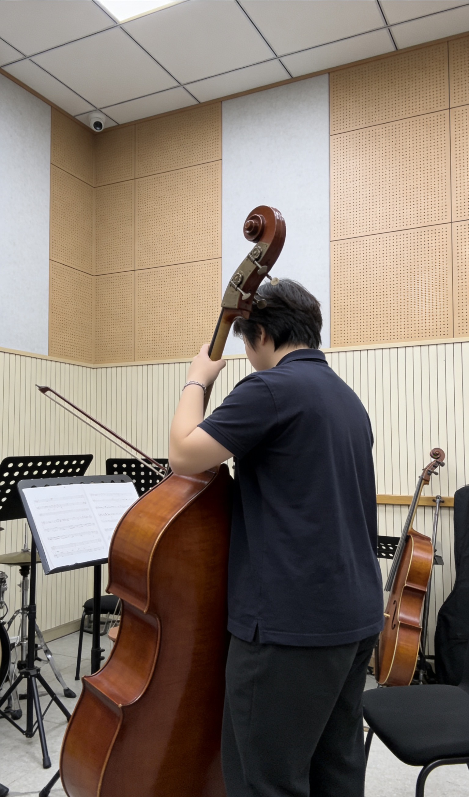

Skill Growth Timeline
Enlightenment: Music Introduction (Primary School)
First contact with music, attracted by the deep timbre of low brass instruments. Insisted on basic music theory learning every day, laying a solid foundation for future instrument learning.

Precipitation: Tuba Introduction (Junior High)
Officially started learning tuba, practiced every day and completed basic grading exams. Felt the core role of low brass instruments in ensemble for the first time, cultivating concentration and perseverance.

Bloom: Double Bass Proficiency (Senior High)
Deepened double bass playing skills, participated in various performances and formed personal playing style. Began to combine musical perception with visual aesthetics, inspiring creative media ideas.

University: Cross-border Creation (Double Bass + Creative Media)
Deepened double bass skills and systematically improved playing level in spare time. Combined with creative media major, integrated the timbre aesthetics of low brass instruments into visual design and web creation, completing "music + design" cross-border practice.

「Creative Media Practice: Low Brass Timbre Visualization Design / Music-themed Web Prototype Creation」